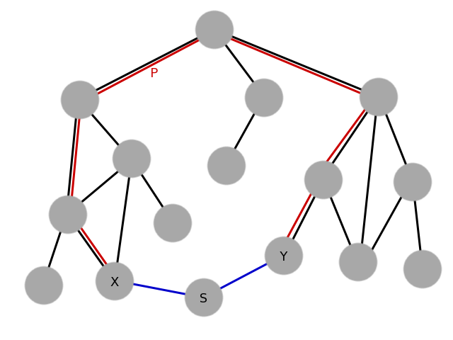

by Kenton Varda in 2010
Singletons are possibly the single greatest obstacle to good object-oriented design today. They are often at the root of huge intractable design flaws in large systems, and yet many programmers continue to use them and even insist that they are a good design pattern. Many programmers point to the fact that the singleton pattern is a prominent part of the book Design Patterns, but don't realize that at least one of the authors of that book (Erich Gamma) is on record saying that it shouldn't have been.
We argue that Singletons are almost always bad design and almost never needed. In the few cases where singletons seem necessary, the "environment pattern" offers a reasonable alternative. Therefore, we recommend that programmers always avoid singletons and that programming languages ban them or at least provide an option to ban them.
It's important to define exactly what we mean by "singleton".
For the purpose of this argument, a singleton is any mutable state which is reachable without starting from the stack (i.e. reachable from static or global variables).
Usually, a singleton is a class of which the author expects that there will only ever be one instance. However, for our purposes, any object which is globally accessible counts. Examples:
Most object-oriented programmers agree that global variables are "bad". What many do not realize is that singletons are, in fact, just a way of disguising global variables in an object-oriented veneer. A singleton is essentially a trojan horse containing an old-fashion, C-style procedural design trying to make its way into the object-oriented fortress. As a result, it suffers from all the same design difficulties that object-oriented design was intended to solve, which we describe below.
When code uses a singleton, it effectively has a new input which is not declared in its interface. This can be confusing to users of the interface. They can no longer tell what resources the code might access. When the code does access a singleton resource, the effects may be surprising to the user who did not expect it. And even if the user knows that the code must be accessing a resource, they cannot see how it obtains this access.
Often, the result of all this is that singleton-heavy designs are uncomfortable to use because it is difficult to form a mental model of what the code is actually doing. When inputs and outputs are obvious, the user can fill in the blanks to imagine the code's implementation, and then they can write their own code around that model. When the workings of a library are mysterious to the caller, the caller is forced to understand it by trial and error, and will have trouble trusting that the library does the right thing under all circumstances.
Singletons allow objects to communicate without ever being "introduced" to each other. This sort of "spooky action at a distance" can be extremely confusing.
Unit testing a module in isolation requires the ability to mock out all resources which that module accesses. Singletons, however, often cannot be mocked, which makes code that uses them hard to test.
One of the most common examples of this involves filesystem access. Good unit tests usually should not access the filesystem, because doing so wastes resources, makes the test non-hermetic, and could accidentally cause damage if the code being tested has bugs. Unfortunately, most platform APIs expose the filesystem as a singleton (e.g. via the "open()" call), and modules which access the filesystem generally call this directly. Those modules are thus hard to test -- usually the test code must take pains to set up and tear down some sort of temporary directory, and must hope that code under test does not access any other location. The solution to the problem is to refactor the module to replace file name arguments with file reference arguments -- instead of calling a method and passing in a file name, you pass in a pointer to a File (or Directory) object. Assuming File and Directory are abstract interfaces, they can then be mocked for the sake of unit tests.
Singletons also inhibit testability by allowing independent tests to unexpectedly influence each other. When running multiple tests in a single process, if one test alters the state of a singleton and forgets to clean up those changes, all tests which run after it could be affected, possibly causing false negatives or even false positives.
When creating a singleton, the author is making the assumption that no program will ever have any reason to have more than one instance of the class. This is a big assumption, and it often proves wrong later on when the requirements change. Unfortunately, once a considerable amount of code has been built around the singleton, it can become infeasible to convert the singleton into a regular multi-instance class. Usually, the assumption that only one instance exists runs deep in all the code around it.
Often, rather than refactor so much code, developers will instead solve their problems by adding features to the singleton. For example, a singleton may be extended with thread-local behavior, so that some code may temporarily modify the singleton while calling some other code that uses it. Or a singleton may be extended to behave differently depending on where it is called, so that two subsystems which previously shared a singleton can be isolated from each other. These "features" add significant complication to the singleton yet usually just lead to deeper problems. For example, the thread-local modifications don't work with asynchronous code, and modifying behavior based on caller doesn't work if different instances of the same class require different behavior from the singleton.
Singletons are a form of "ambient authority". All code running in the same process potentially has access to a singleton. Therefore, if any one singleton anywhere in a process happens to provide access to a sensitive resource, then all code in the process must be trusted not to abuse that singleton.
Because most platform APIs have traditionally provided sensitive resources (such as filesystem access) as singletons, it has long been impossible to run untrusted code within a privileged process. Many programmers assume that this is simply a law of programming: executing evil code is always a security problem. This is not true! As this site is dedicated to showing, in a memory-safe programming environment with no singletons, evil code cannot get access to any resource unless it explicitly receives a reference from its caller. Thus, as long as you are careful about what references you pass, running evil code is perfectly fine. Furthermore, because sandboxing code is so trivial in such an environment, programmers will naturally tend to sandbox their own code, which is useful if their code has bugs that can be exploited by malicious third parties.
In order to get these security benefits, every singleton present in the environment must be benign. That is, it must not provide access to any sensitive resource, and ideally it must not provide any way for objects to use it as an uncontrolled communication channel. Preventing communication channels is not always strictly necessary, but allows you to be assured that two separate instances of evil code cannot communicate unless explicitly allowed to do so.
The easiest way to ensure that all singletons are benign is to disallow singletons altogether. If singletons are allowed at all, then the developer must be given a way to audit all singletons in a code base. If the code base has many singletons -- and, unfortunately, evidence suggests that allowing singletons usually leads to this -- then this audit becomes impossible, and the only option is to avoid running untrusted code.
Thus the million-dollar question is:
Which is easier: Avoiding executing untrusted code, or avoiding using singletons?
If you want singletons, you have to ban untrusted code. If you want untrusted code, you have to ban singletons. As described in the other points in this argument, singletons are often bad design anyway. On the other hand, the ability to easily run untrusted code has huge benefits in a world built around collaboration and delegation. The choice should be obvious.
Constants are not considered to be singletons. Even complex objects can be constants so long as they are transitively immutable, and as long as they have exactly the same value regardless of the environment in which the code is running. Thus, a constant cannot be initialized by reading a data file from the hard drive -- unless that data file is read at compile time and embedded in the compiled program.
Note that code itself is a kind of constant.
These are some of the worst examples of singletons!
Providing open() as a singleton means that any piece of code anywhere in your program may access the filesystem with the same rights as any other part of the program. This makes it basically impossible to execute untrusted code. It also makes code hard to test, as described above, and makes code inflexible, because it depends on a concept of a single global filesystem. What if you want the program to operate on files in a temporary in-memory filesystem? Or a filesystem in the cloud? What if you explicitly do not want the program to operate on the local filesystem because you want to be able to relocate the process to a different machine?
Instead of providing open(), main() should receive a reference to a Directory implementation representing the filesystem. main() should then pass on that reference only to parts of the code which need it, or use some other Directory implementation if it prefers. This solves the above problems.
As for stdout, the same thing applies. If you are writing an interactive console program, the last thing you want is for some random library that you happen to be using to start writing to stdout, without any way for you to stop it. So stdout should be passed to main() and should not be accessible to anyone else until they receive the reference that main() received.
In practice, everyone acknowledges that debug logging should be available to every piece of code. We make an exception for it. The exact theoretical basis for this exception, for those who care, can be provided in a few ways.
From a security standpoint, debug logging is a benign singleton. It cannot be used as a communication channel because it is write-only. And it is clearly impossible to cause any sort of damage by writing to a debug log, since debug logging is not a factor in the program's correctness. Even if a malicious module "spams" the log, messages from that module can easily be filtered out, since debug logs normally identify exactly what module produced each message (sometimes they even provide a stack trace). Therefore, there is no problem with providing it.
Analogous arguments can be made to show that debug logging does not harm readability, testability, or maintainability.
Another theoretical justification for debug logging says that the debug log function is really just a no-op that happens to be observed by the debugger. When no debugger is running, the function does nothing. Debugging in general obviously breaks the entire object-capability model, but it is also obviously a privileged operation.
This approach simply pushes responsibility to your clients. Any client code which chooses to use your "default instance" becomes afflicted with all the usual problems with singletons. Worse, all code which depends on that client is also afflicted, all the way up the stack. The only way that the client can redeem itself is by allowing its callers to choose between using your singleton instance vs. a custom object, thus pushing the choice to its clients. Eventually the choice gets pushed up the stack until it reaches a point where some code is able to choose a reasonable non-singleton instance to use. At that point, the singleton instance is no longer needed anyway. So, providing a singleton default instance has achieved nothing except to entice your clients into writing bad code.
Security-wise, this may be valid. However, if singletons are allowed at all, then all singletons in a program must be audited to ensure that they present no risk. If the number of singletons grows large, or if the language does not provide a good way to enumerate all singletons present in some source code, auditing can become infeasible.
Furthermore, the non-security problems with singletons can apply even to benign singletons.
Several languages, such as Java, support use of ACLs to define which classes can be accessed from which other classes. In practice, these features are rarely used, because using them requires too much extra work. In contrast, object-oriented security means doing things you should have been doing anyway.
There are multiple approaches to using ACLs in this way. In one approach, ACLs control which modules can call which other modules. For instance, module A may be able to call module B, which in turn may be able to call module C, but module A cannot call module C directly. This allows a trusted module B to provide a "safe" interface between untrusted module A and sensitive module C. A major problem with this approach is that it can lead to "confused deputy" problems. For example, say we have some code we don't trust, but we do need it to be able to access one directory in the filesystem. So, we have carefully set up its ACLs so that when it calls open() the call is only permitted if it is for a file inside this particular directory. Great. But now let's say someone (who we trust) has created a helper function for reading files that looks like:
String readEntireFile(String filename);Should our untrusted code be able to access this? Well, fundamentally this is just a utility function, not something which provides access to protected resources. But on the other hand, it allows the caller to read any file in the filesystem. We obviously don't want to set our ACLs to restrict what readEntireFile() can read because we wouldn't know how to restrict it, so instead we have to set the ACLs to restrict calls to readEntireFile() from untrusted code. We can either prevent untrusted code from calling this function at all, which would limit the usefulness of having this helper in the first place, or we can painstakingly ensure that we've set up ACLs so that our untrusted code can only call readEntireFile() on the same filenames on which it can call open(). If we forget to restrict access at all, we have introduced a security hole.
This approach to access control simply isn't scalable. As the API grows, more and more holes like this appear and have to be "fixed" by ACL changes. Yet, the vast majority of code (think: string manipulation, math, collections, and even I/O helpers like readEntireFile()) does not present any inherent security risk, so reviewing it all to look for problems is a waste of time. The object-capability model clearly separates benign "utility" code from sensitive resource providers in order to make it much easier to see and filter just the sensitive stuff.
In a more feasible approach to using ACLs, such as the approach used by Java, large groups of objects can be instantiated in a single sandbox, and any calls crossing the sandbox boundary must be checked against an ACL. This approach has been successful for things like Java applets, but it is difficult to use. In this approach, an object is either inside the sandbox or it is not, providing only two security levels. Generally, the ACL is such that objects in the sandbox have practically no permissions while objects outside of it have unlimited permissions. Setting up fine-grained sandboxes is too difficult, and so collaboration between many entities with various trust levels is hard. No one ever sandboxes their own code, even though this would help protect against bugs in that code.
Other parts of this site compare ACLs to capabilities more generally. All the general principles apply equally at the object level.
Imagine an object tree:

The claim is that, during development, some object X may suddenly discover that it needs access to object Y. In order to provide access without a singleton, a path P must be cut through the object graph to communicate the reference, requiring refactoring of all objects in between. This may be excessively tedious. On the other hand, creating a singleton S through which the two can be connected (or simply converting Y itself into a singleton) is much easier.
There are two responses to this argument.
First, this case is not as common as many people imagine. In practice, it's not typical for an object to suddenly start needing access to some other previously distant and unrelated object. More commonly, objects need access to other objects in their immediate vicinity, and providing this access does not require much work.
Second, if the above problem is solved by communicating through a singleton, this solution nevertheless implicitly depends on knowledge of the entire path between X and Y. X, being a low-level module, cannot itself know that Y is the object it needs. All it knows is that it needs some object implementing some particular functionality. Only a higher-level object in the graph -- typically, an object which is an ancestor on the graph of both X and Y -- can actually know that Y is the correct object for X to use. Thus, when a programmer connects X to Y through a singleton, they are hard-coding assumptions about the rest of the system. If the system ever changes in such a way that those assumptions no longer hold, the code breaks. This makes the system design inflexible.
Therefore, we conclude that, while it is true that these situations may require tedious work, the tedious work is a necessary part of good software engineering. Sometimes doing the right thing is tedious, but that's not an excuse to use "easier" solutions that actually cost more in the long run.
This is sometimes true, but the changes in question are almost always hacks that solve problems in the short term while introducing bigger problems in the long-term. It is far too easy for a singleton-based hack to become ingrained in the system and infeasible to undo later. Such hacks should thus not be allowed unless measures are taken to ensure that they won't stick around long-term. See below for more discussion about such measures.
It's hard to argue this point without some sort of numbers. Neither side of the debate has produced any. Our intuition is that the extra pointers won't significantly increase memory usage because they are generally only attached to control objects, not low-level data. For instance, strings, collections, and other low-level types clearly do not use singletons today and thus would not need any additional pointers. These usually account for the majority of a program's memory usage.
Also, the environment pattern compromise below does not incur any significant pointer bloat.
Nearly everyone who has ever defined a singleton was thinking exactly this. Sometimes they are right, but all too often their code evolves in unexpected ways that prove them wrong, after it is too late. Don't let a lack of foresight lead you to paint yourself into a corner. Avoid singletons from the start. Besides, the readability, testability, and security arguments apply even if there really will never be more than one of the object.
Singletons are most useful in implementing "hacks" -- solutions that are acknowledged to be bad design, but which can be implemented quickly in order to solve an urgent problem or prototype an idea. Singletons, like any hack, cause the greatest problems when they are allowed to stay in a system long-term, but the importance of hacks in the real world is irrefutable.
Ideally, we'd like a way to enable the power of singletons for hack purposes while preventing those hacks from becoming ingrained in the system. This section covers some possible compromises.
Unix (and, to a lesser extent, Windows) has a notion of an "environment" containing key/value pairs ("variables") that are automatically propagated from one process to another. By default, a process inherits its environment from its parent process, but the parent process can also choose to provide a new or modified environment to the child instead.
In many ways, environment variables are like singletons. They are ambiently available: any piece of code can read or write an environment variable without declaring publicly that it will do so. An environment variable can communicate any arbitrary text, and when combined with other global namespaces (especially the filesystem), can communicate references to arbitrary objects in those namespaces.
Let's imagine a more object-oriented version of the environment concept: Say that each environment variable is actually a reference to an object implementing some abstract interface. Also, say that the environment is not per-process, but rather per-thread, so that it may be overridden for particular function calls. Let's even go ahead and define an interface for the environment itself:
interface Environment {
Object get(String name);
}And imagine we can override it like:
void foo() {
// Define an environment which overrides the variable "baz".
Environment oldEnv = getEnvironment();
final Baz myBaz = new Baz();
Environment myEnv = new Environment() {
Object get(String name) {
if (name.equals("baz")) {
return myBaz;
} else {
return oldEnv.get(name);
}
}
}
// Use that environment while executing some code.
usingEnvironment(myEnv) {
bar();
}
}This presents some of the usual singleton-related problems, but significantly mitigated:
Environment implementation which logs calls to get(), a caller can determine exactly which variables the callee accesses.
This approach gives us most of the benefits of singletons (in the rare cases where they are really desirable) while mitigating the drawbacks. Note that this proposal is effectively an explicit form of dynamic scoping.
One major problem with the basic environment pattern as presented above is that it is very procedurally-oriented. In object-oriented systems, it is probably more appropriate to inherit the environment at object construction time, rather than at method call time.
That is, say that we have a class Foo which calls into another class Bar. Foo's constructor takes an instance of Bar for it to use. But what if Bar's methods are affected by the environment, and the environment we want to give to Bar differs from the one we want to give to Foo? If we are using the basic environment pattern, we must adapt Bar such that it records a reference to the environment in its constructor, and uses that reference during other method calls, rather than using the current environment passed from the caller. However, if Bar inherited the environment at time of construction rather than time of method calls, everything would work fine.
In practice, construction-time environment inheritance is likely to be desirable much more often than call-time environment inheritance, especially for event-driven systems using asynchronous callbacks. Unfortunately, construction-time inheritance is harder to implement without built-in support from the programming language.
To be clear, the environment pattern is not ideal. Well-designed code should avoid it, preferring explicit constructor and method parameters instead. The environment pattern is useful as a temporary solution to link together two pieces of a system that were not linked before. Over the long-term, such use of environment variables should be replaced with explicit parameters.